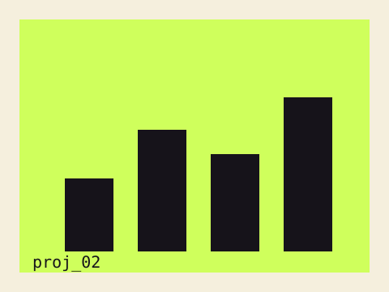

Figma · Team Project →

A meditation-themed interactive website exhibited at the Art & Technology Center.
A team project built and exhibited at the Art & Technology Center (ATC), designed around a meditation theme — from concept and visual design through to a shipped interactive site.
Team Leader. Designed in Figma Sites, with supporting work in Notion, Photoshop, After Effects, and Premiere Pro.